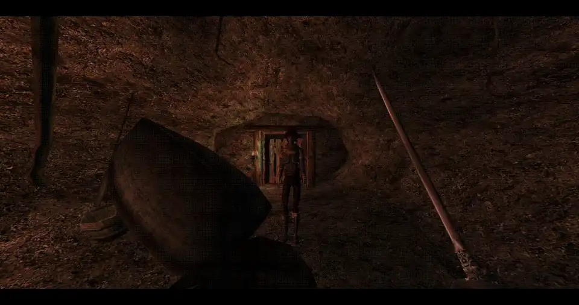

T4rg3t5
Version: 0.5

Morrowind Lock-On Targeting System
Requirements


Overview
With T4rgets, an enemy's health is displayed according to the color of the icon. Each enemy has five phases from full to wounded to dead, with the actual icon color mixing between the two nearest colors. This means you always know how healthy the enemy is in combat!
Target indicators also grow in size dynamically according to how far away your target is. Additionally, it is impossible to target enemies which are offscreen, and the mod does not use any raycasts unless the CheckLOS setting is enabled - what this means for you is no bad targets, and high performance (as much as can be expected from updating a UI element every frame, anyway).
T4rg3t5 comes with a full suite of 31 icons to use for lock-on indicators. Additionally, it's very easy to create new target lock icons for T4rg3t5 for your own mods or personal use.
Please make sure to assign a keybinding for T4rg3t5 to use, or the mod will be (mostly) useless.
Core Features
Smart Target Acquisition
- Automatic Target Selection: Finds the nearest valid enemy in your field of view

-
Line-of-Sight Checking: Ensures targets are actually visible and not behind obstacles
-
Flick Switching: Quickly change targets by flicking the mouse left or right

Combat Auto-Lock: Automatically locks onto enemies who initiate combat with you

Visual Target Indicators
-
Dynamic Lock Icons: Customizable target markers that scale with distance
-
Health-Based Coloring: Icon color changes based on enemy health status:
-
Full Health (100%+): Primary color
-
Very Healthy (80-100%): Mix with full health color
-
Healthy (60-80%): Distinct healthy state
-
Wounded (40-60%): Noticeable wound indication
-
Very Wounded (20-40%): Critical condition warning
-
Dead/Dying (0-20%): Near death state
-

- Hit Feedback: Icons "bounce" when you successfully hit locked targets

- Distance Scaling: Icons grow/shrink based on target distance
Intelligent Automation
-
Auto-Facing: Character automatically turns to face locked targets
-
Weapon Awareness: Only allows locking when wielding weapons
-
Smart Target Management:
-
Automatically switches targets when current target dies
-
Breaks lock when targets move out of sight
-
Releases lock when sheathing weapons
-
For Modders
Events
Target locking always happens by way of sending an event. If you wish to modify this behavior somehow, you may create an eventHandler for the S3TargetLockOnto event. This will allow you to prevent target locking in some circumstances, change the target, do some specific behavior when a target is locked, etc. In the eventData is only the targeted actor, which is nil if the target lock has been broken for any reason.
Triggers
You can also engage target locking manually from any PLAYER script by calling input.activateTrigger('S3TargetLockOn'). This will either disable or enable locking as appropriate.
If you care to check whether a target is already selected or not, then use I.S3LockOn.Manager.getMarkerVisibility().
ProtectedTable
T4rg3t5 uses H3lp Yours3lf's protected table interface, which offers many conveniences - such as displaying all the associated setting values by simply trying to print the table. Try the following the console and explore for yourself:
luap
I.S3LockOn.ManagerMaking New Icons
Making new Icons for T4rg3t5 is dead simple. The recommended way is to use GIMP, but any image editor should be able to handle this task.
- First, pick or create a source image.
- Open it in GIMP
- Use Colors -> Threshold to flatten all the colors to pure black/white. Make sure to adjust the values to find ones that fit your image.
- Either delete the black pixels, or lighten them, using Colors -> Levels to increase the white levels of these pixels, so that the script's coloration works better.
- Use Image -> Scale Image to resize the image to 128x128
- Export as DDS without mipmaps OR compression to a subfolder,
textures/s3/crosshair